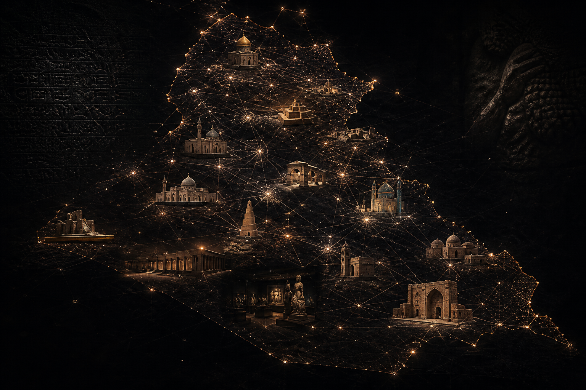
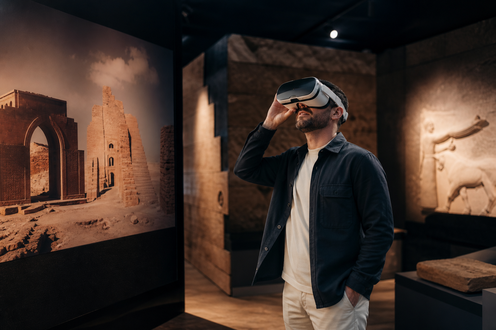

السياحة الدينية
المراقد، الأضرحة، المزارات، الجوامع والمواقع الدينية التي تستقطب الزوار من داخل العراق وخارجه.
مقترح أبعاد العراق × هيئة السياحة والآثار
نقترح بناء شبكة من الجولات الافتراضية التفاعلية للمعالم الدينية والأثرية والتراثية والسياحية والمتاحف العراقية، لتصبح هذه المواقع قابلة للزيارة والاستكشاف رقميًا من داخل العراق ومن مختلف أنحاء العالم.
رؤية المشروع
يمتلك العراق واحدًا من أغنى المشاهد الدينية والحضارية والتراثية في المنطقة، لكن تجربة كثير من هذه المواقع ما زالت مرتبطة بالحضور الفعلي إليها. الجولات الافتراضية تفتح طبقة جديدة من الوصول؛ يستطيع من خلالها الزائر التجول داخل الموقع، مشاهدة تفاصيله، التعرف على قصته، ثم تكوين ارتباط حقيقي بالمكان قبل زيارته على أرض الواقع.
الهدف ليس استبدال الزيارة الفعلية… بل خلق سبب أقوى لها.المراقد، الأضرحة، المزارات، الجوامع والمواقع الدينية التي تستقطب الزوار من داخل العراق وخارجه.
المدن القديمة، البيوت التراثية، الشوارع التاريخية، المواقع الحضارية والوجهات السياحية ذات القيمة الثقافية.
المتاحف والمواقع الأثرية التي يمكن تحويلها إلى تجارب معرفية رقمية قابلة للاستكشاف من أي مكان.
نماذج عالمية
مواقع دينية وأثرية ومتاحف بارزة أصبحت قابلة للاستكشاف من أي مكان، لتوسّع دائرة الوصول إليها وتمنح الجمهور فرصة الدخول إلى المكان وفهم تفاصيله قبل زيارته فعليًا.
الجولة الافتراضية لا تعرض صورة المعلم فقط؛ بل تسمح للزائر بالتحرك داخله، استكشاف تفاصيله وفهم المساحة والعناصر المحيطة به وكأنه موجود في الموقع.
نموذج لتجربة التراث من خلال المحتوى الرقمي الغامر.من المواقع الدينية الكبرى إلى المدن التاريخية والمواقع الأثرية والمتاحف العراقية، يمتلك العراق مادة حضارية قادرة على تشكيل واحدة من أغنى شبكات الجولات الافتراضية في المنطقة.
القيمة السياحية
قبل أن يختار السائح مدينة أو معلمًا أو متحفًا، تبدأ رحلته اليوم على الشاشة. المشروع يمنح المواقع العراقية فرصة الحضور في تلك المرحلة المبكرة من قرار السفر، بدل أن تبقى معرفتها محصورة بالصور والمعلومات التقليدية.
الجولة تتيح للمستخدم استكشاف الموقع من خارج العراق، ومن مدن أخرى داخل العراق، دون أن تكون المسافة عائقًا أمام التعرف عليه.
كل موقع يصبح أصلًا رقميًا قابلاً للمشاركة عبر المواقع الإلكترونية والمنصات الاجتماعية والحملات السياحية والروابط المباشرة.
كلما عرف الزائر المكان وتفاصيله بشكل أفضل قبل الرحلة، أصبح الانتقال من الفضول إلى التخطيط للزيارة أكثر واقعية.
إنشاء نسخة رقمية ثلاثية الأبعاد للموقع لا يخدم التسويق فقط، بل يشكل أرشيفًا بصريًا يمكن الرجوع إليه في التعليم والتوثيق والعرض الثقافي.
نطاق المشروع الوطني
يمكن تنفيذ المشروع على مراحل لبناء مكتبة وطنية مترابطة من المواقع الدينية والأثرية والتراثية والسياحية والمتاحف، بحيث يمتلك كل موقع تجربته المستقلة، مع إمكانية جمعها لاحقًا ضمن منصة مركزية واحدة.

المراقد، العتبات، الأضرحة، المزارات، الجوامع التاريخية، والمدارس والمواقع الدينية ذات القيمة التاريخية.
أمثلة ممكنة مثل بابل، أور، نينوى، الحضر، والمواقع السومرية والبابلية والآشورية والأثرية الأخرى.
بغداد التاريخية، الموصل القديمة، البيوت التراثية، الأسواق، الأزقة، الخانات، والعمارة التقليدية.
المتاحف الوطنية والمحلية، متاحف المدن، المتاحف المتخصصة، والمجموعات التراثية المفتوحة للجمهور.
تجربة غامرة
يمكن استخدام بعض الجولات ضمن تجارب الواقع الافتراضي VR، لتقديم المواقع العراقية داخل المعارض السياحية والفعاليات الدولية والمراكز الثقافية والبوثات الترويجية.

نموذج التنفيذ
اختيار مجموعة محدودة ومتنوعة من المواقع لإطلاق النموذج الأول: موقع ديني، موقع أثري، متحف، وموقع تراثي أو سياحي، دون تحديد أسماء نهائية قبل موافقة الهيئة.
توسيع المشروع ليشمل مواقع إضافية بناءً على الأولويات السياحية والثقافية والجغرافية.
ربط الجولات ضمن تجربة وطنية موحدة يمكن الوصول إليها من بوابة مركزية واحدة.
استخدام المحتوى في الحملات الدولية والمعارض والفعاليات والمنصات السياحية الرقمية.
الرؤية
يمكن أن تتحول الجولات الافتراضية من مجموعة تجارب مستقلة إلى بوابة وطنية رقمية تجمع المعالم الدينية والأثرية والتراثية والسياحية والمتاحف ضمن تجربة واحدة، وتقدم العراق للعالم من خلال المكان نفسه.
تجربة رقمية قابلة للاستكشاف من أي مكان.
من الجولات إلى منصة وطنية
يمكن تطوير منصة رقمية موحّدة تجمع الجولات الافتراضية للمواقع الدينية والتراثية والأثرية والسياحية في العراق، وتتيح للجمهور الدخول إليها من أي مكان داخل العراق أو خارجه.
يمكن اعتماد رسوم رمزية للوصول إلى بعض الجولات أو المحتوى المتخصص، بما يخلق موردًا يساعد في استدامة المنصة وتطوير محتواها وإضافة مواقع جديدة.
للأشخاص الذين لديهم فضول للتعرف على المواقع التراثية والدينية والسياحية، حتى عندما لا تكون الزيارة الفعلية متاحة لهم.
تمنح المنصة الجمهور خارج العراق فرصة دخول المواقع واستكشافها قبل السفر أو حتى دون القدرة على زيارتها فعليًا.
تساعد الجولات الافتراضية الطلبة والباحثين على استكشاف المواقع وتفاصيل العمارة والآثار والحضارات العراقية عن بُعد لدعم الدراسات والأبحاث.
منصة رقمية يمكن أن تجمع المعرفة، الاستكشاف، السياحة والتوثيق ضمن تجربة واحدة.
أبعاد العراق
نقترح البدء بنموذج تجريبي لمجموعة مختارة من المواقع، وتحويلها إلى تجارب رقمية يمكن تقييم أثرها، ثم بناء المشروع على نطاق أوسع بالتعاون مع هيئة السياحة والآثار.